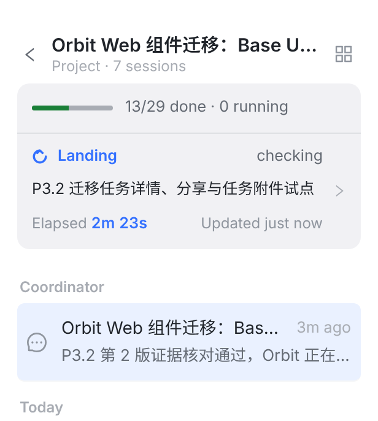
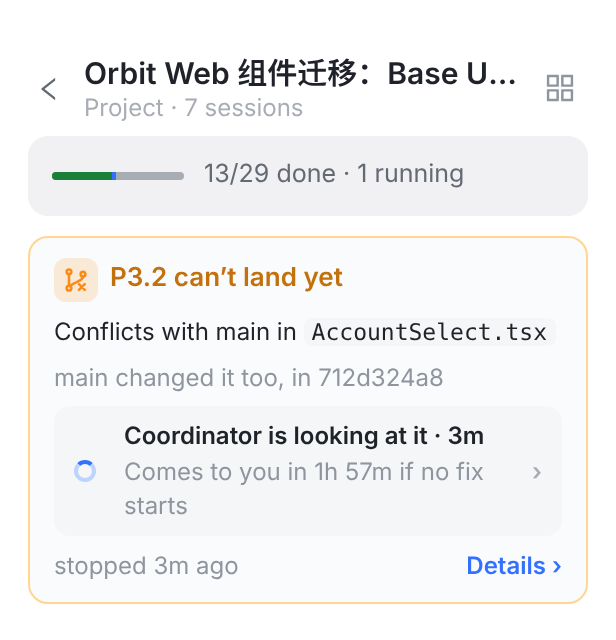
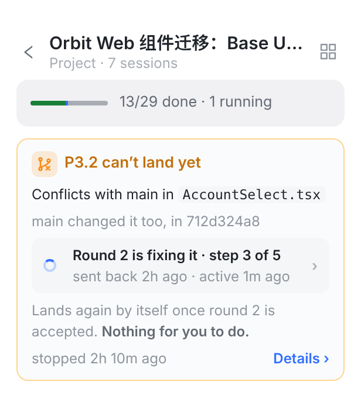
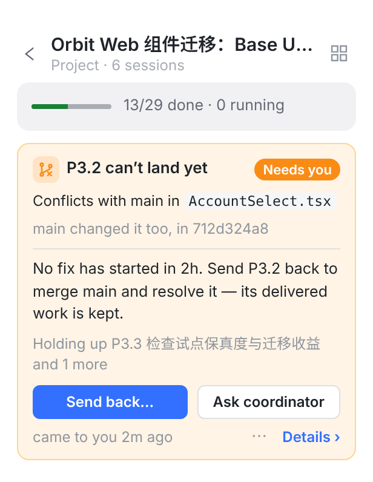
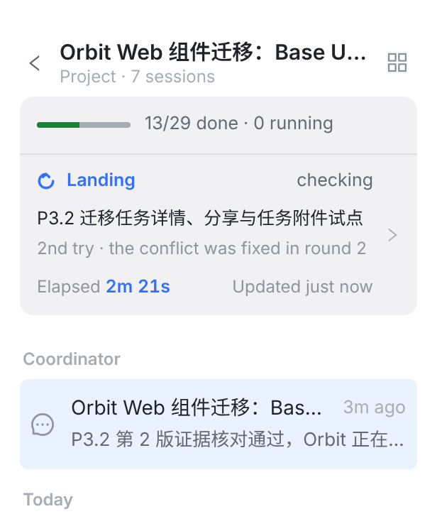
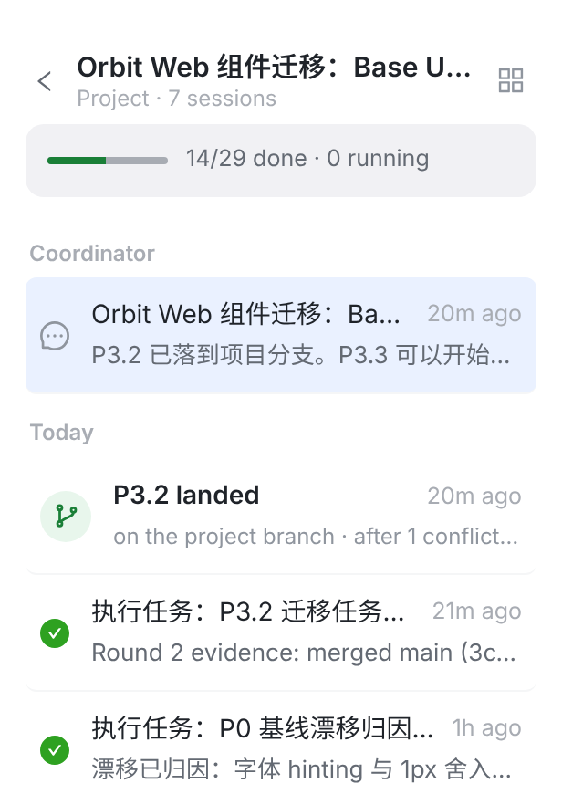

都是项目会话页最上面那一块，截自真实控制台。颜色规则沿用合入卡：灰 / 蓝 = Orbit 在跑，琥珀 = 别人在处理，橙 = 等你，绿 = 已经落下。只有橙色会推送、亮橙点、带主按钮。卡片只在这次落地停下时出现，落下以后就收成时间线里的一行。






英文是界面原文；中文是说明。改后的每个值都来自服务端读到的事实（待办、作业、任务进度），客户端不自己编句子。
| 位置 | 现在 | 改后 |
|---|---|---|
| 标题 | Now yours — no one acted on this for 2h 8m | P3.2 can’t land yet（只有 d 加 Needs you 徽标） |
| 原因 | Into refs/heads/project/34ZZeq0e3IR65GVm2kAs7 at da13423 · nothing landed Files src/web/src/components/AccountSelect.tsx | Conflicts with main in AccountSelect.tsxmain changed it too, in 712d324a8 分支名、sha、全路径挪进 Details |
| 谁在处理 | （没有；只有页脚 Owner: you） | Round 2 is fixing it · step 3 of 5 · sent back 2h ago · active 1m ago Coordinator is looking at it · 3m · Comes to you in 1h 57m if no fix starts |
| 要你做什么 | （没有。服务端的 requiredAction 没画） | Nothing for you to do. No fix has started in 2h. Send P3.2 back to merge main and resolve it — its delivered work is kept. |
| 修好以后 | After a fix: push to the task branch — Orbit re-integrates and re-checks on its own（没实现） | Lands again by itself once round 2 is accepted. |
| 按钮 | Ask the coordinator again · Open task session · Retry · Cancel task · Mark as handled · Chat about this | b / c：无按钮（状态行可点） d：Send back… · Ask coordinator；⋯ 里 Cancel P3.2… / Mark as handled；Details 里 Chat about this |
| 页脚 | Owner: you · waiting 2h 10m · came to the owner at 2h 8m | stopped 2h 10m ago · Details › / came to you 2m ago · ⋯ · Details › |
| 协调会话 | Exception item 大卡 ＋ Now yours 大卡 | 每个时刻一行：琥珀（停下）→ 灰（开始修）→ 橙（转给你，仅 d）→ 蓝（再次落地）→ 绿（落下） |
每张异常卡都适用（冲突、检查失败、集成错误）；本期只改冲突。